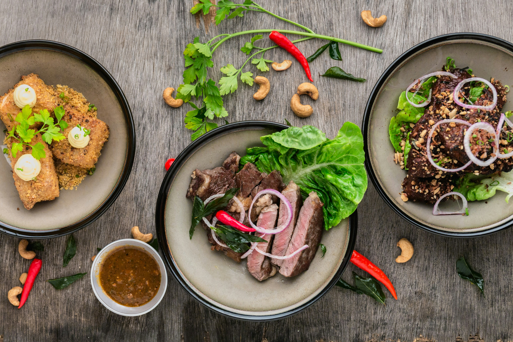

Welcome to Zul's Republic
Authentic Nigerian Food
Experience the rich flavors of Nigeria, prepared with love and tradition.
About Us
Discover the Story Behind Zulaiha Republic
About Restaurant
At Zul's Republic, we celebrate the rich heritage of Nigerian cuisine. Our restaurant brings together authentic flavours, fresh ingredients, and the warmth of Nigerian hospitality.

Our History
Zul's Republic was founded with a passion for sharing the vibrant flavors of Nigeria with the world. What started as a small family restaurant has grown into a beloved destination for authentic Nigerian cuisine.
Signature Dishes
Specific Delicacies
Discover our delicious Nigerian specialties, from flavorful jollof rice to rich traditional soups, prepared with fresh ingredients and authentic recipes.
Traditional Favorites
Our Gallery
Explore our delicious food and restaurant.
Book a Table
Reserve your table and enjoy a wonderful meal.
Contact Us
Get in touch with Zul's Republic.